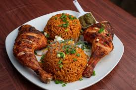

Ghanaian Jollof rice is a delicious and popular West African dish known for its vibrant flavors and unique preparation. It is a one-pot rice dish cooked with a variety of ingredients that include tomatoes, onions, and bell peppers, creating a rich and aromatic tomato-based sauce. The dish is then seasoned with a blend of spices, such as thyme, curry powder, and bay leaves, providing a distinctive taste that sets it apart.
What makes Ghanaian Jollof rice stand out is not just its flavorful profile but also the method of preparation. The rice is typically cooked in the flavorful tomato sauce, allowing it to absorb all the savory goodness and resulting in a well-seasoned and colorful dish. Often served at celebrations, gatherings, and family meals, Ghanaian Jollof rice is a beloved culinary tradition that showcases the rich and diverse flavors of West African cuisine.